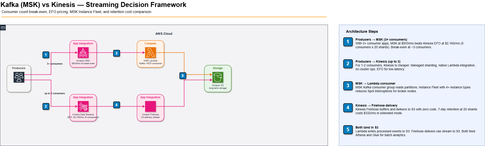

Kafka vs Kinesis: The Decision Framework Nobody Publishes
Kinesis was the right answer until we hit 5 consumers
We built a real-time clickstream pipeline on Kinesis Data Streams. Four months in, the data science team wanted to read the same stream for model feature computation. The ML engineering team wanted it for anomaly detection. The compliance team wanted it for audit logging. We went from 1 consumer to 4. Kinesis standard gets cost quadrupled — each consumer application reads each shard independently at $0.015/shard-hour. At 20 shards, that is $8.64/day per consumer application. Four consumers: $34.56/day = $1,037/month just for reads. Enhanced Fan-Out existed, but at $0.015/shard-hour additional. MSK suddenly made financial sense.
The fundamental architecture difference
Kinesis Data Streams is a shard-based, pull model where each shard delivers up to 2MB/s out, shared across all standard consumer applications reading it. Amazon MSK (Kafka) is a broker-based, push model where consumers pull independently from partition replicas — multiple consumer groups reading the same topic do not compete for throughput. This single difference drives most of the decision.
Kinesis: 2MB/s write per shard, 2MB/s read per shard shared across all standard consumers. For 5 consumer applications reading 2MB/s each, you need 5 shards per consumer's required throughput — the read is not multiplexed. MSK: one partition delivers its full throughput to every consumer group independently. Five consumer groups do not multiply partition requirements.
Cost model: where each wins
| Dimension | Kinesis KDS | MSK Kafka |
|---|---|---|
| Shard/partition pricing | $0.015/shard-hour ($10.80/shard-month) | Included in broker instance cost |
| Enhanced Fan-Out | $0.015/shard-hour additional per consumer | Not needed — all consumers read full throughput |
| Minimum operational cost | ~$0/month (1 shard, no EFO) | ~$196/month (kafka.t3.small × 3 brokers) |
| At 20 shards, 5 consumers (EFO) | ~$2,160/month | ~$490/month (kafka.m5.xlarge × 3) |
| Retention max | 7 days (extended: $0.023/shard-hour) | Unlimited (storage cost only) |
| Operational overhead | None — fully managed | High — broker scaling, rebalancing, topic management |
The consumer count break-even
The break-even is approximately 3 consumer applications at moderate throughput (10 shards). Below 3 consumers: Kinesis KDS wins on both cost and zero operational overhead. Above 3 consumers: MSK wins on cost but adds operational complexity. The break-even shifts lower as throughput increases — at 50 shards, MSK becomes cheaper at 2 consumers.
# Cost calculator: KDS vs MSK break-even
def calculate_kinesis_cost(shards: int, consumers_efo: int) -> float:
shard_cost = shards * 0.015 * 24 * 30 # $0.015/shard-hour
efo_cost = shards * consumers_efo * 0.015 * 24 * 30 # EFO per consumer
return shard_cost + efo_cost
def calculate_msk_cost(broker_type: str = "kafka.m5.xlarge", brokers: int = 3) -> float:
prices = {"kafka.t3.small": 0.054, "kafka.m5.large": 0.216, "kafka.m5.xlarge": 0.432}
return prices[broker_type] * brokers * 24 * 30
# At 20 shards, 5 EFO consumers:
kinesis = calculate_kinesis_cost(20, 5) # $2,160/month
msk = calculate_msk_cost("kafka.m5.xlarge", 3) # ~$933/month
print(f"KDS: ${kinesis:.0f}/month")
print(f"MSK: ${msk:.0f}/month")
print(f"MSK saves: ${kinesis - msk:.0f}/month at this scale")Architecture: when to use each
// Kafka (MSK) vs Kinesis — streaming architecture decision

Retention: the hidden Kinesis constraint
Kinesis default retention is 24 hours. Extended retention (7 days) costs $0.023/shard-hour — at 20 shards that is $332/month just for retention extension. Long-term retention (up to 365 days) costs $0.00023/shard-hour per GB stored. MSK stores data as topic segments on EBS — you pay $0.10/GB-month for EBS storage and set retention by size or time without an additional API charge. For compliance pipelines needing 90-day retention, MSK storage cost is dramatically lower.
Kinesis shard limits are regional. The default shard limit is 500 per account per region. At 1MB/s write per shard, 500 shards = 500MB/s = 43TB/day capacity. Most teams never hit this. But if you're aggregating events from multiple sources into a single stream and scaling fast, request a limit increase proactively — the increase takes 24 hours to process.
The decision: use Kinesis when
- Fewer than 3 consumer applications reading the same stream
- Retention under 7 days and no compliance requirement for longer
- No dedicated Kafka expertise on the team — MSK still requires Kafka operational knowledge
- Lambda as the consumer — KDS → Lambda ESM integration is first-class, Kafka → Lambda requires MSK trigger configuration
- AWS-only ecosystem — Kinesis integrates natively with Firehose, Analytics, and Lambda without connectors
Use MSK when: you have multiple consumer groups, retention requirements beyond 7 days, existing Kafka Connect connectors you need to reuse, or you need topic-level throughput that does not scale with consumer count.
resource "aws_msk_cluster" "events" {
cluster_name = "events-streaming"
kafka_version = "3.5.1"
number_of_broker_nodes = 3
broker_node_group_info {
instance_type = "kafka.m5.large"
client_subnets = [
aws_subnet.private_a.id,
aws_subnet.private_b.id,
aws_subnet.private_c.id
]
storage_info {
ebs_storage_info { volume_size = 1000 } # 1TB per broker
}
}
encryption_info {
encryption_in_transit { client_broker = "TLS" }
}
configuration_info {
arn = aws_msk_configuration.events.arn
revision = 1
}
}